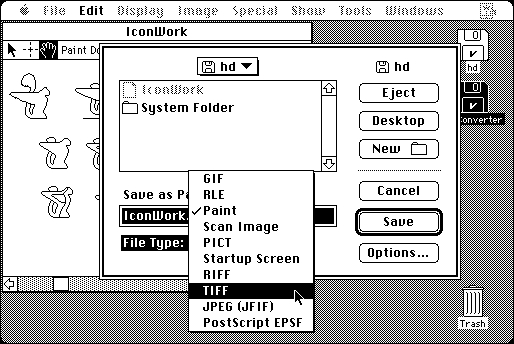

Download
gifconverter-237.zip (365K) GIF Converter 2.3.7 repackaged into a zipped hfs disk image and checksum file. The disk image can be mounted with Mini vMac.
gifconverter-237.hqx (500K) GIF Converter 2.3.7 in the original format.
gifcdoc.pdf.zip (356K) GIF Converter 2.4.4 manual repackaged into a zipped pdf and checksum.
gifcdocpdf.sit.hqx (487K) GIF Converter 2.4.4 manual in the original format.
copyright: Kevin A. Mitchell
mod date: Jan 29, 1994
license: shareware
last known url
(older version gone)
Displays and converts between "several graphic file formats, including GIF, TIFF, RIFF, PICT, JPEG(JFIF), MacPaint, and Thunderscan."

If you find these downloads useful, please consider helping the Gryphel Project, which hosts them.
Here are the md5 checksums for the downloads, signed with Gryphel Key 5:
--------- GRY SIGNED TEXT --------- 4f21983684f7916bc926bf4e0bef04f7 gifconverter-237.zip 7d8d3b8ab8a68a020ce464517e1e6bd8 gifconverter-237.hqx f1ec449aa4d04f33e4aadfc047fd16f6 gifcdoc.pdf.zip fece86e079c605259535f893aa52c398 gifcdocpdf.sit.hqx ------- BEGIN GRY SIGNATURE ------- Gry/4Xa8CFcUzxdN/HEJm+Z9vMYksTBGYk+HggYCNOtDUZsLZgzoPPyLnFDF47Zd UQmWdQ6DVcgmq7P6siOZgwy9Xh7UZVwhyMB8sRV0V+8oCvw+Vx7Pcr2Ign7TS8sV 11JOQr552ur7dtQjoWvifMjtRHK42A8WiUYh4LUa/eoJ9rll+/k7svD3YtHCLH0T -------- END GRY SIGNATURE --------